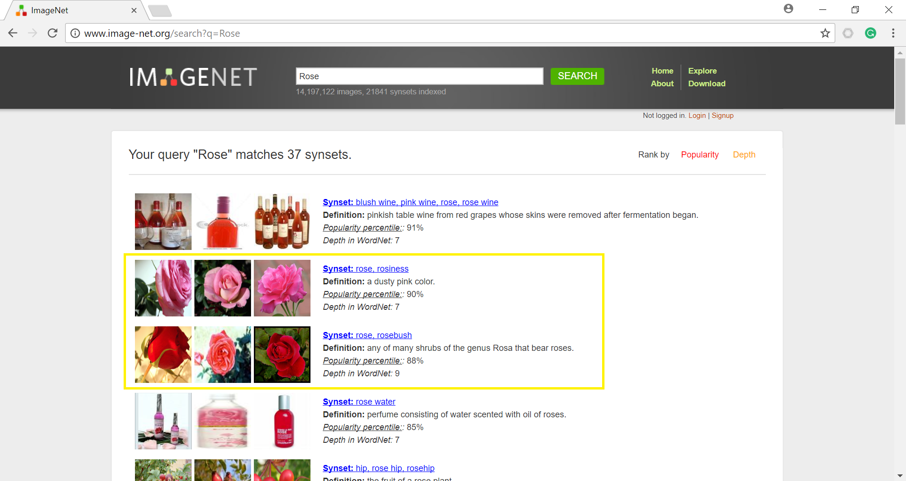
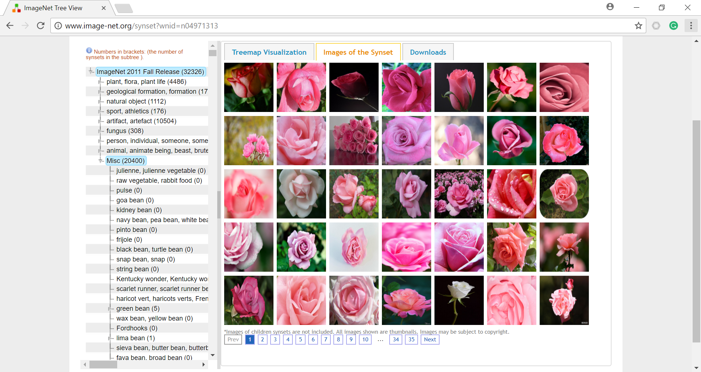
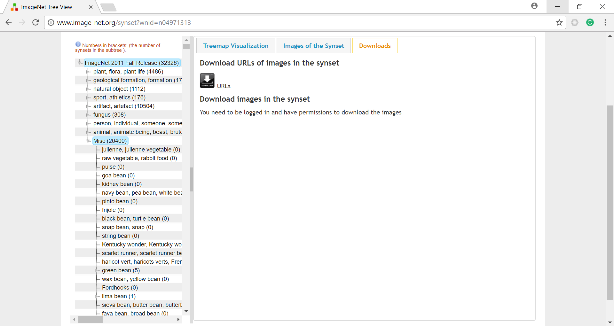
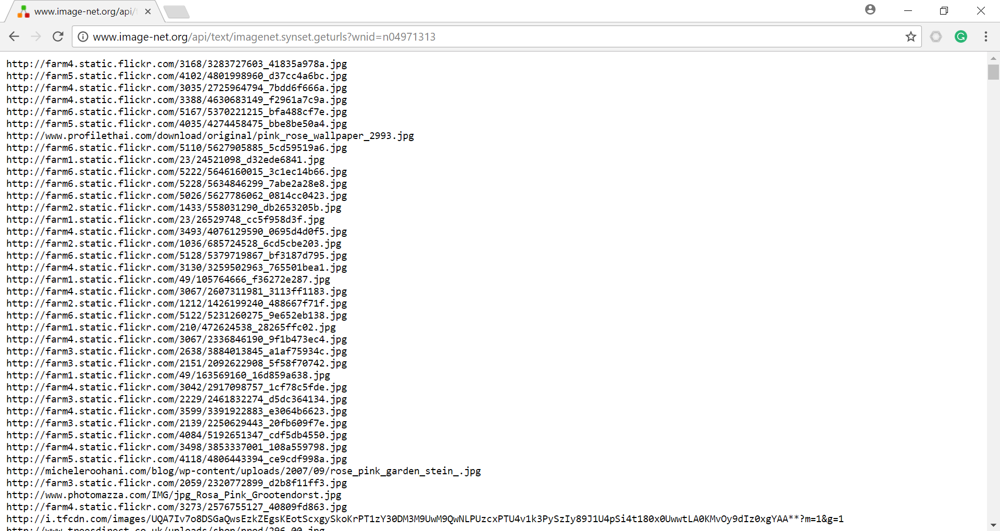
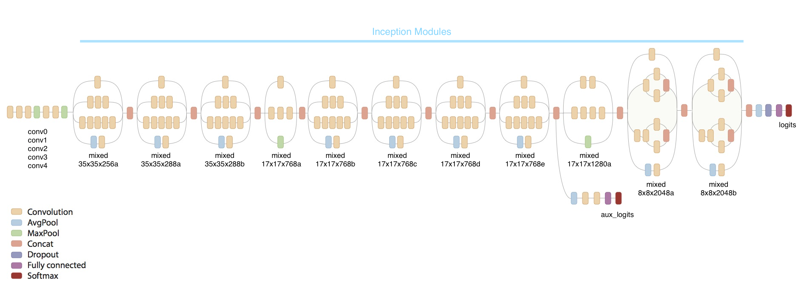

In this tutorial, we will cover:
- How to Retrain the state-of-the-art Inception Model's Final Layer for Image Classification.
- How to Retrain a more efficient model "MobileNet's" Final Layer for mobile Phones.
- How to use these models in an Android App and Build it ro use on your phones.
Requirements
- OS: Ubuntu/AWS Cloud/Google Cloud/Windows
- Python 3+
- OpenCV [optional]
- Tensorflow
So, let's get started.
Prerequisites
Data Collection and Preprocessing
The first step in this tutorial before even retraining the model is the collection of the dataset. In this tutorial, I'll be creating my own dataset of "roses" and "tulips". Feel free to collect/use your own dataset.
NOTE: If you want to download a dataset from anywhere else, you can skip this step and move to the first step in this tutorial
To get the images for the dataset, I'll be using Imagenet website to get the links to the images and fetch them using their URL's and a simple python script. So, let's get started.
Let's go the Imagenet website and search for images of roses.

As we can see that for a search of word "rose", Imagenet gives us a lot of results. But here we are focusing only on the flower rose and nothing else. So, the results in the yellow box are the only ones of our interest.
Let's click on the first link and see what we get.

As you can see, we are presented with a lot of images of roses. Now, we want all these images to be in a folder from where we can fetch them and train our network. So, how do we fetch all these images? Well, we write a python script that can fetch all the URL's for each of these images and saves all the images into the folder. Let's see how this works.
On this same page, click on downloads. You will be presented with a link for URL's as shown in image below.

On this page, click on URL's and you will be taken to another page where you will be presented with a lot of URL's. These all URL's are the URL's for each one of the images that we saw earlier and a lot more.

Now, the next step is to fetch all these URL's and download the images from them into a folder using a Python script. So, let's write this python code.
Now that we have fetched all the images of roses and tulips into the 'rose/' and 'tulip/' directories, now it's time to train the upper layers of Inception and MobileNet models.
NOTE: If you think that the amount of data you have downloaded is less, use Imagenet website to get the extra webpage links of other images and use the same script to dowload the images into the same folders.
Retraining the Inception Model [Final Layer]
Inception is a state-of-the-art Image Recognition and Classification model created by Google. Inception model has the following structure:

The inception model learns different features at every step from the input image and at the output gives the probability of the labels for the contents in the image using a Softmax function on the Logits.
For our use case, we just need to retrain the final layer of the inception model
So, now we have reached the end of Part 1 of this tutorial. I hope I was able to clearly represent the working of GAN's.
For a deeper insight into GAN's watch this video and read these two papers: Paper 1 and Paper 2.
For Part 2 of this tutorial, click here
For more projects and code, follow me on Github
Please feel free to leave any comments, suggestions, corrections if any :)
comments powered by Disqus